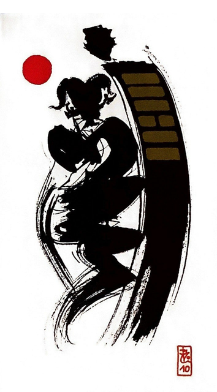

천택리
평괘 5
범의 꼬리를 밟아도 사람을 물지 않으니 형통하다
범이 무섭다고 해도 웃음과 예로 뒤따르는 사람에게는 너그럽다호랑이 꼬리를 밟고 있어 두려움에 떨지만 차분하게 대응하면결국 호랑이가 떡을 주는 상황을 표현한 그림시작은 어렵고 불편하나 조심스러운 마음으로 임한다면 성공함
행한다.예법.밟다.따라가다.이끌다.예의를 갖춰 실행.주의하여 조심히 진행하라.책임감 있게 행동하라.
연애운
적당한 거리를 두고 만나는 연애. 나이차이가 있을 때.
사업운
윗 사람의 도움을 받으면 순조로음.참고 적응하면 긍정결과. 매사 신중하면 괜찮다.
속마음
썸아직 서먹하고 어색한 마음
1년 이상권태스러운 마음.간섭이 불편한 마음
이별 후아직 마음의 거리가 있다고 생각하는 마음
솔로연애운
새로운 이성 생길 확률 적다
건강운
호흡기 질환. 두통. 성병 염려